- Coamoeba
Consider a toric Calabi-Yau $CY_n$ with a given toric diagram $V$, which is a convex set of points valued in $\mathbb{Z}^{n-1}$. Its mirror geometry \cite{Hori:2000kt, Hori:2000ck} is another $n$-fold $\mathcal{W}$ given by a double fibration over the complex $w$ plane \begin{equation} \begin{aligned} P(x_i,\ldots,x_{n-1}) &= w,\\ uv &= w, \end{aligned} \end{equation} where $u,v\in\mathbb{C}$ and $x_i\in\mathbb{C}^*$. Here $P(x_1,\ldots,x_{n-1})$ is the Newton polynomial associated to the toric diagram \begin{align} P(x_1,\ldots,x_{n-1}) &= \sum_{\vec{v}\in V}c_{\vec{v}}x_1^{v_1}\cdots x_{n-1}^{v_{n-1}}, \end{align} where $c_{\vec{v}}$ are complex coefficients and the sum runs over points $\vec{v}$ in the toric diagram.
Practical guide to reading off the Newton polynomial.
Starting from the toric fan $V$, all points in the toric diagram are simply given as a position vector in $\mathbb{C}^{n-1}$. Each of these gives one monomial in the polynomial, with powers of $x_i$ given by the $i^{\text{th}}$ component of $v$.
See examples in later sections.
The critical points of this fibration are defined as the vanishing of the Newton polynomial's derivatives \begin{align} \forall\mu\in\{1,\ldots,n-1\},\quad \frac{\partial}{\partial x_{\mu}}P(x_1,\ldots,x_{n-1}) &= 0. \end{align} Such points are denoted by $(x_1^\ast,\ldots,x_{n-1}^\ast)$ and give rise to the critical $w$-plane value $w^\ast=P(x_1^\ast,\ldots,x_{n-1}^\ast)$. The number of critical points is precisely the one required for a basis of wrapped D$(9-n)$-branes in the mirror that accounts for the gauge nodes in the field theory.
For generic values of the coefficients $c_{\vec{v}}$ an $S^{n-2}\subset\Sigma_{w}$ shrinks to zero size at each critical value $w^\ast$. In addition, the $S^1$ from the $uv$ fibration vanishes at $w=0$. Considering this $S^{n-2}\times S^1$ fibration over a straight vanishing path connecting $w=0$ and $w=w^\ast$, we obtain an $S^n$.
All the $S^n$'s meet at $w=0$, where the $S^1$ fiber vanishes. The gauge theory is encoded in the way the $S^{n-2}$'s intersect on the vanishing locus $w^{-1}(0):P(x_\mu)=w=0$. For $n=3,4$ this is precisely the holomorphic surface $\Sigma$ that underlies the brane tiling \cite{Franco:2005rj} and the brane brick model. This implies that these objects can be reconstructed from the intersections of the $S^{n-2}$'s. We will refer to each $S^n$ as $\mathcal{C}_i$, $i\in\{1,\ldots,G\}$, and to the corresponding $S^{n-2}$ on $\Sigma$ as $C_i$. When studying the intersections of the $C_i$, it is often useful to consider two standard projections: the amoeba, which projects $\Sigma$ onto the log$|x_\mu|$-plane, and the coamoeba, which projects it on the arg$(x_\mu)$-torus.
Given a subvariety $Z\subset(\mathbb{C}^\ast)^n$, we define its \emph{amoeba} $A(Z)$ \cite{Gelfand:1994abc} as the image under the projection \begin{align} \operatorname{Log}:(C^\ast)^n\rightarrow\mathbb{R}^n,\quad (z_1,\ldots,z_n)\mapsto(\ln(|z_1|),\ldots,\ln(|z_n|)), \end{align} and its \emph{coamoeba} $C(Z)$ \cite{Passare:2004abc, Feng:2005gw} as the image under the projection \begin{align} \operatorname{Arg}:(C^\ast)^n\rightarrow T^n,\quad (z_1,\ldots,z_n)\mapsto(\operatorname{arg}(|z_1|),\ldots,\operatorname{arg}(|z_n|)). \end{align}
(Taken from \cite{Kuo:2024goh})

Here the Newton polynomial generically takes the form \begin{align} P(x,y) &= \sum_{v \in V}c_{v}x^{v_1}y^{v_2} = c_{(0,0)}+c_{(0,1)}y+c_{(1,0)}x+\frac{c_{(-1,-1)}}{xy}, \end{align} but three of the four coefficients can be set to unity.
Let us consider the simpler case where $c_{(0,0)}=0$, for which \begin{align} P(x,y) &= x+y+\frac{1}{xy}. \end{align} Its critical points are given by $(x^\ast,y^\ast)$ such that $\partial_x P(x,y)=\partial_y P(x,y)=0$. In other words, \begin{align} \begin{cases} \partial_x P(x,y) = 1-\frac{1}{x^2y} = 0\\ \partial_y P(x,y) = 1-\frac{1}{xy^2} = 0 \end{cases} \Leftrightarrow \begin{cases} x^2y = 1\\ xy^2 = 1 \end{cases} \Leftrightarrow\quad x = y \,\&\, x^3 = 1 \end{align} This leads to the solutions $(x^\ast,y^\ast)=(1,1),(\omega,\omega),(\omega^2,\omega^2)$, where $\omega=e^{2\pi i/3}$.
As detailed in the general exposure above, these critical points give rise to the critical $w$-plane with values $w^\ast = P(x^\ast,y^\ast) = 3,3\omega,3\omega^2$.
To each critical point, we assign a curve $\gamma_i(t)$ on the $w$-plane such that $\gamma_i(0)=0$ and $\gamma_i(1)=w_i^\ast$. Here, we choose those to be straight lines \begin{align} \gamma_i(t) &= t w_i^\ast = 3t\omega^i. \end{align}
Let us now consider the $y$-tomography, i.e. the critical points of $y$ as a function of $x$ at $w=0$. \begin{align} P(x,y)&=0 \qquad \Leftrightarrow\qquad y=-\frac{x}{2}\pm\sqrt{\frac{x^2}{4}-\frac{1}{x}}\\ \frac{dy}{dx}&=0 \qquad \Leftrightarrow\qquad x^3=-\frac{1}{2}\nonumber\\ &\qquad\qquad \Leftrightarrow\qquad x=-2^{-1/3},2^{-1/3}e^{i\pi/3},2^{-1/3}e^{-i\pi/3} \end{align} Thus, the critical values of $y$ are $y_0=2^{2/3},...$.
Alternatively, we can study the singularity structure of $y$ using the tools of algebraic geometry. Let us rewrite the Newton polynomial as the following polynomial, \begin{align} P(x,y)&=0\qquad\Leftrightarrow\qquad xy^2 + x^2y + 1 =0. \end{align} This describes a 2-sheeted algebraic curve in $y$ whose singularities are found where the discriminant vanishes, \begin{align} \Delta(y) = y^4-4y = 0\qquad &\Leftrightarrow\qquad y=0\text{ or }y^3=4\nonumber\\ &\Leftrightarrow\qquad y=0, 4^{1/3}\omega^k\quad (k\in\{0,1,2\}). \end{align} Note that we can also put that curve in a Weierstrass form, \begin{align} xy^2 + x^2y + 1 &= 0 \qquad\Leftrightarrow\qquad X^2 = Y^3-4, \end{align} where $X=\sqrt{y}(2x+y)$ and $Y=y$. This is manifestly a hyperelliptic curve, whose singularities lie at the roots of $Y^3-4$.
Let us now analyse the structure of these curves for different vanishing paths on the $w$-plane. Thus, we will consider $P(x,y)=3t\omega^i$, for $i\in\{1,2,3\}$. This gives the following algebraic curve equation \begin{align} x^2y+xy(y-3t\omega^i)+1 = 0. \end{align} The singularities are found at the vanishing points of its discriminant, \begin{align} \Delta(y) = y^2(y-3t\omega^i)^2-4y = 0\qquad &\Leftrightarrow\qquad y=0\text{ or }y(y-3t\omega^i)^2=4. \end{align} Given the simplicity of the above equation, we can easily extract a closed form solution, for all three paths $\gamma_i(t)$, \begin{align} \begin{cases} y_0^{(1)}(i,t) &= 2\omega^it+\frac{\omega^{2i}t^2}{(2-t^3+2\sqrt{1-t^3})^{1/3}}+ (2-t^3+2\sqrt{1-t^3})^{1/3},\\ y_0^{(2)}(i,t) &= 2\omega^it+ \frac{\omega^{2i+1}t^2}{(2-t^3+2\sqrt{1-t^3})^{1/3}}+\omega^2 (2-t^3+2\sqrt{1-t^3})^{1/3},\\ y_0^{(3)}(i,t) &= 2\omega^it+ \frac{\omega^{2i+2}t^2}{(2-t^3+2\sqrt{1-t^3})^{1/3}}+\omega (2-t^3+2\sqrt{1-t^3})^{1/3}. \end{cases} \end{align} The quantity $(2-t^3+2\sqrt{1-t^3})^{1/3}$ being purely real and non-zero, for all $t\in[0,1]$, the branch points can only coincide when the terms proportional to $\omega^0$, $\omega$ and $\omega^2$ coincide. This happens precisely at $t=1$, where two of the points merge. A visualisation of this effect is displayed in figure~\ref{fig:dP0-ytomography}, for all three paths $\gamma_i(t)$ on the $w$-plane.
Figure: Visualisation of the three branch points on the elliptic curve of dP$_0$ as we move along all three paths on the $w$-plane (in \textcolor[rgb]{0.12156863, 0.46666667, 0.70588235}{blue}, \textcolor[rgb]{0.83921569, 0.15294118, 0.15686275}{red} and \textcolor[rgb]{0.96862745, 0.71372549, 0.82352941}{pink}, following the same convention as in figure~\ref{fig:dP0-wpaths}). Paths that do not close an $S^1$ cycle have been coloured gray.
Here the Newton polynomial generically takes the form \begin{align} P(x,y) &= \sum_{v \in V}c_{v}x^{v_1}y^{v_2} = c_{(0,0)}+c_{(0,1)}y+c_{(1,0)}x+\frac{c_{(-1,0)}}{x}+\frac{c_{(0,-1)}}{y}, \end{align} however, we will only consider the following choice of coefficients \begin{align} P(x,y) &= x + \frac{1}{x} + i\left(y+\frac{1}{y}\right). \end{align} As before, its critical points are given by $(x^\ast,y^\ast)$ such that $\partial_x P(x,y)=\partial_y P(x,y)=0$. In other words, \begin{align} \begin{cases} \partial_x P(x,y) = 1-\frac{1}{x^2} = 0\\ \partial_y P(x,y) = i\left(1-\frac{1}{y^2}\right) = 0 \end{cases} \Leftrightarrow \begin{cases} x^2 = 1\\ y^2 = 1 \end{cases} \end{align} This leads to four solutions $(x^\ast,y^\ast)=(1,1),(-1,1),(1,-1)$ and $(-1,-1)$. These lead to the critical values on the $w$-plane $w^\ast=2+2i,-2+2i,2-2i$ and $-2-2i$. To each of these, we assign a curve $\gamma_i(t)$ on the $w$-plane such that $\gamma_i(t) = 0$ and $\gamma_i(1) = w^\ast_i$. As before, we choose the straight lines \begin{align} \gamma_i(t) = tw^\ast_i. \end{align}
We now consider the $y$-tomography along the paths $\gamma_i$, by treating the equation $P(x,y)=\gamma_i(t)$ as the defining equation of a hyperelliptic curve. Indeed, we can rewrite it as \begin{align} P(x,y) &= tw^\ast_i\qquad\Leftrightarrow\qquad x^2y+x(iy^2+i-tw_i^\ast y)+y=0. \end{align} The branch points, that define the double covering of this torus, are found at the vanishing points of the polynomial's discriminant, \begin{align} \Delta(y) &= -(y^2+itw_i^\ast y+1)^2-4y^2 = 0. \end{align}
Let us now see what happens as we consider different Newton polynomial coefficients, giving us access to different toric phases of $F_0$. In general, the polynomial takes the form \begin{align} P(x,y) = c_{(0,0)} + c_{(1,0)}\left(x+\frac{1}{x}\right) + c_{(0,1)}\left(y+\frac{1}{y}\right), \end{align} after setting two pairs equal to each other. We can then find the branch points of $y$ as above. Numerical solutions are given below.

Figure: Animation of the $x$ and $y$ tomographies of F$_0$ for various values of the complex coefficients $c_i$.
We can automate our previous two searches to general Newton polynomial coefficients and general reflexive polytope.
Some preliminary tomographies are displayed in below, where the following choices were made for the Newton polynomial coefficients \begin{equation} \begin{aligned} c_{(-1,1)}&=i & c_{(0,1)}&=i & c_{(1,1)}&=1\\ c_{(-1,0)}&=1 & c_{(0,0)}&=1 & c_{(1,0)}&=1\\ c_{(-1,-1)}&=i & c_{(0,-1)}&=i & c_{(1,-1)}&=1 \end{aligned} \end{equation} whenever they are present.
As described in previous sections, as we move along the curves from $w=0$ to $w=w^\ast$, the singularities on the $x/y$-planes will also move around. As the equation $P(x,y)$ describes a hyperelliptic curve, the branch points on the $x/y$-planes actually describe the double fibration required to construct these higher genus curves. Whenever two branch points meet, the elliptic curve degenerates as one of its cycles vanishes. This happens precisely at $w=w^\ast$ and this coincident branch point is displayed as a black dote in Figure~\ref{fig:tomographies}. Moving from a given $w^\ast$, where one cycle of the elliptic curve vanishes, to $w=0$ thus describes the aforementioned $S^1$ fibration of $S^3$. This set of $S^1$ may intersect along the way, leading to a non-trivial configurations of superimposed $S^3$ in the mirror curve. The interestions are also marked in Figure~\ref{fig:tomographies}.
We are now ready to move on towards the main topic -- the \emph{coamoeba}. As mentioned earlier this variety is a projection of our curve $\Sigma$ under the $\operatorname{Arg}$ map. In otherwords, it is constructed as a the set of $\theta_{x,y}$ that solve \begin{align} P(r_xe^{i\theta_x}, r_ye^{i\theta_y}) &= 0, \end{align} for any $r_{x,y}$. Consequently, we can see it as an infinite folding of the $\Sigma$ curve at different values of $r_{x,y}$ onto the torus spanned by $\theta_{x,y}$. In most cases, this infinite folding will give rise to dense regions on the torus. These dense regions can sometimes be identified with the dimer model. \BS{For instance \cite{Feng:2005gw} says \emph{If we assume that the embedding of the graph $\Gamma$ is such that the projection to the $T^2$ is an isomorphism (i.e. there do not exist two distinct points on $\Gamma$ with the same angular parts), then the alga projection of $\Gamma$ is identified with the graph of the dimer model obtained by the twisting procedure of \S5, up to homotopy. We conjecture that it is always possible to arrange this, and we give several examples in \S7.4.}}
We can evaluate this numerically for a finite number of foldings and a discretisation of the torus. By sampling evenly the discrete torus, we can evaluate $P(x,y)$ for a discrete set of radii $r_{x,y}$ (evenly samples on $[0,1[$ and then mapped to $[0,\infty[$ using $r\mapsto r/(1-r)$). Whenever $P(x,y)$ is below our level of tolerance, we color the torus at that value of $\theta_{x,y}$. Doing so for multiple polytopes gives our plots in Figure~\ref{fig:coamoeba}.
 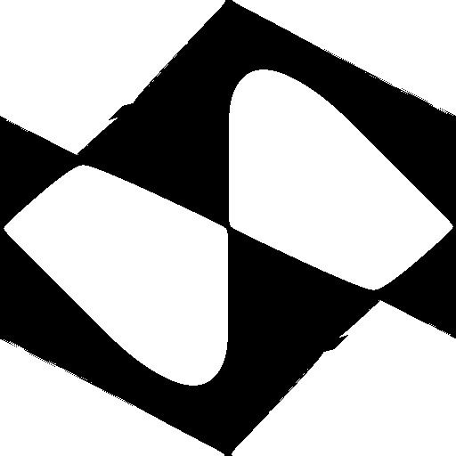
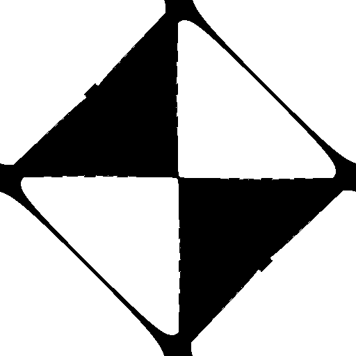
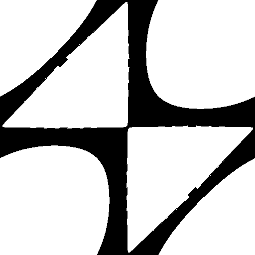
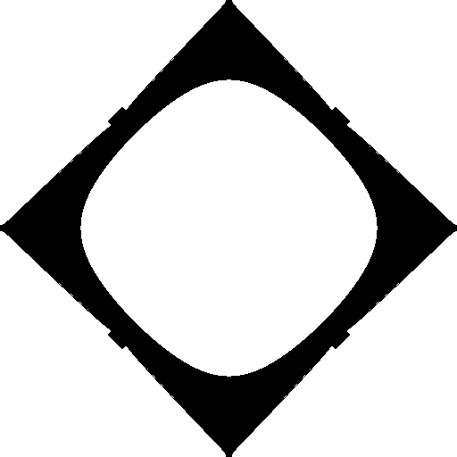
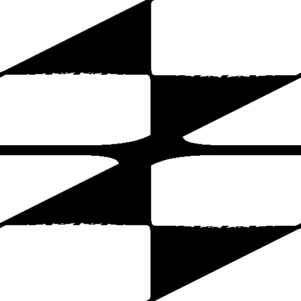
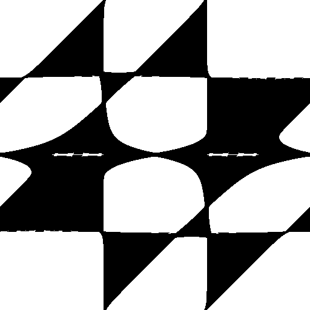
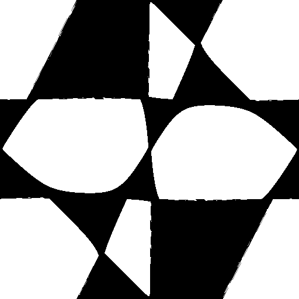
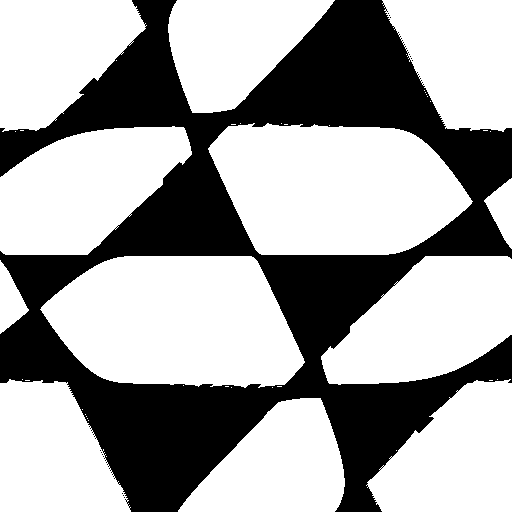
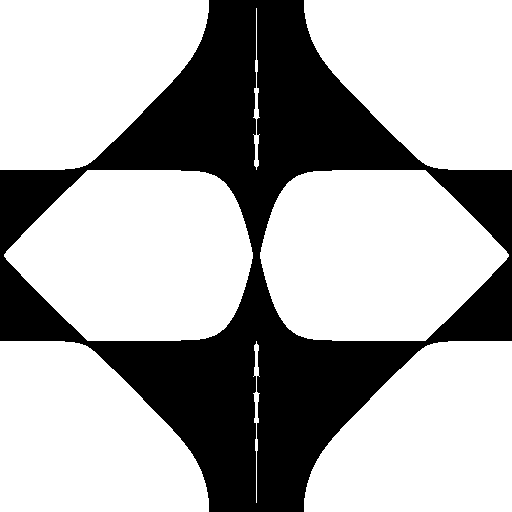
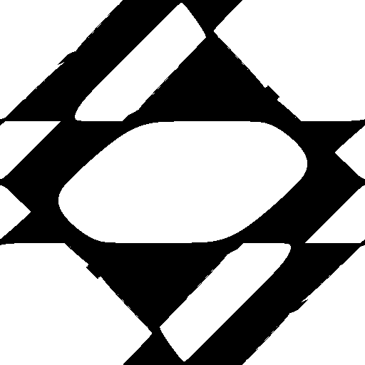
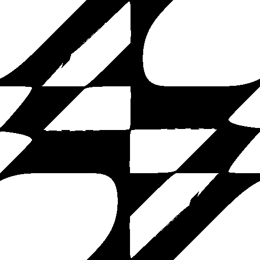
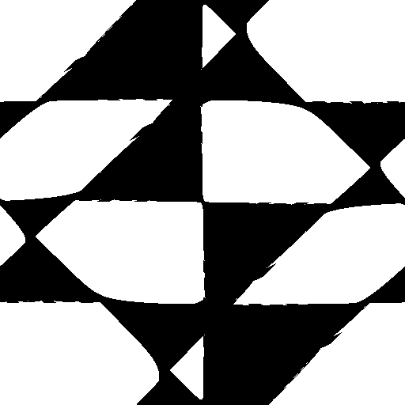
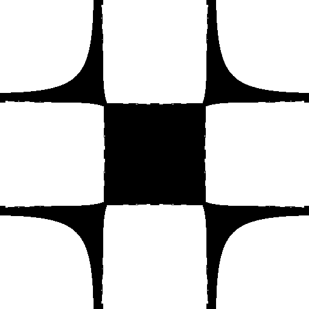
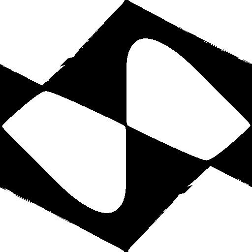
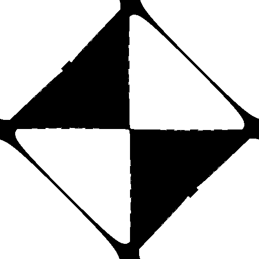
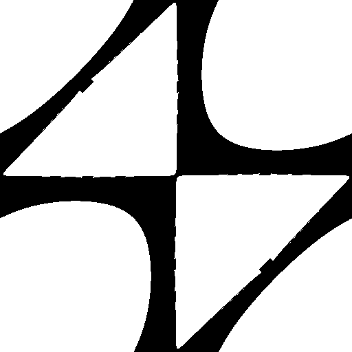
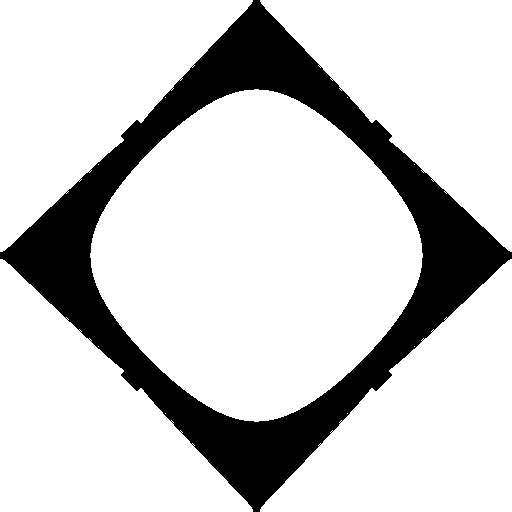
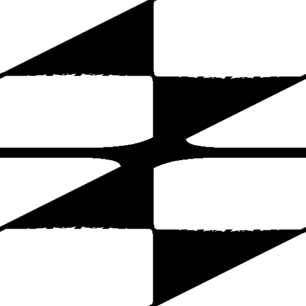
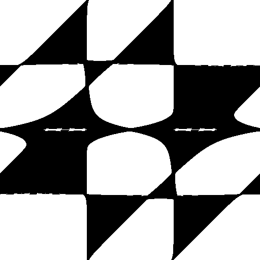
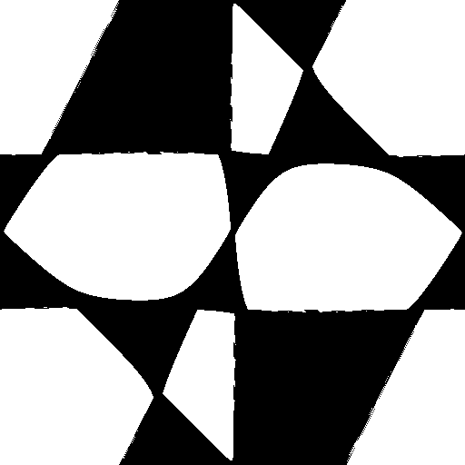
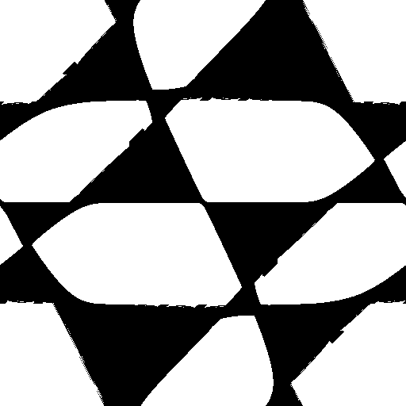
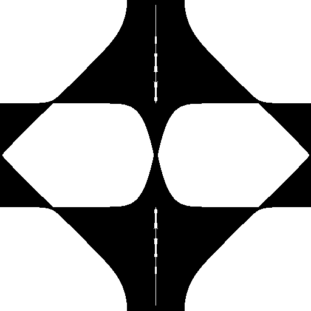
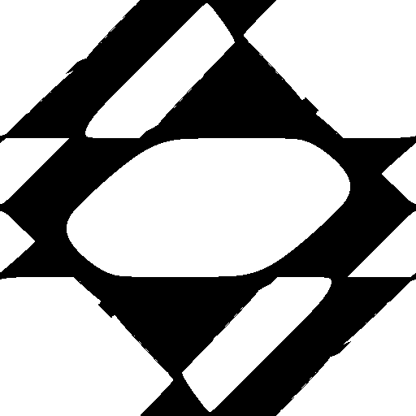
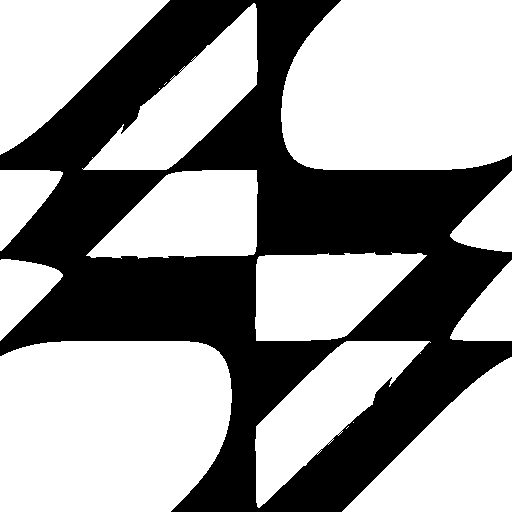
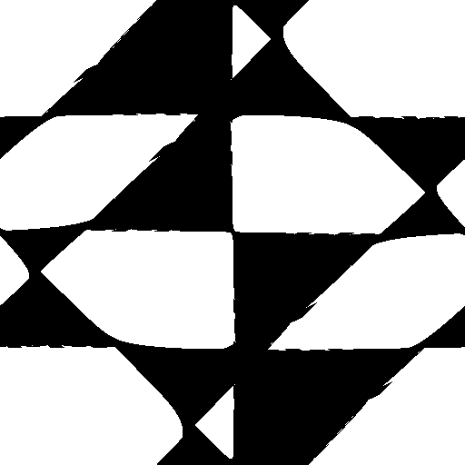
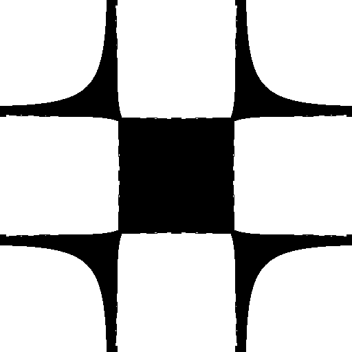
How to go from tomography to dimer skeleton. Consider a general polytope whose Newton polynomial has $k$ distinct critical values, $w_i^\ast$. Each curve from $w=0$ to $w=w_i^\ast$ will be labelled $\gamma_i(t)$, where $0\leq t\leq 1$. As illustrated in the $dP_0$ and $F_0$ examples, when $t=0$ the $x$ and $y$-planes will display a set of branch cuts. As we evolve along a given path $\gamma_i$ from $t=0$ to $t=1$, these branch cuts will move around. A one-cycle will collapse whenever two of these meet at $t=1$ -- a critical point $(x^\ast,y^\ast)$. The set of all these closed one-cycles encodes all the information about the dimer.
Indeed, shifting our attention to the coamoeba picture, the critical points $(x^\ast,y^\ast)$ are mapped to angular values $(\theta_{x^\ast},\theta_{y^\ast})$, which correspond to the center of dimer faces. As we move along the a given path $\gamma_i$ from the critical point $w^\ast$ towards the origin, we can follow the corresponding close one-cycles on the $x$/$y$-planes. Generically, these cycles will intersect with or end on another closed one-cycle, associated to path $\gamma_j$. On the coamoeba, this indicates that as we moved away from the face center $(\theta_{x^\ast_i},\theta_{y^\ast_i})$, we eventually intersected another face, centered on $(\theta_{x^\ast_j},\theta_{y^\ast_j})$. This set of intersections is precisely the way in which the bifundamental fields are encoded in the dimer picture.
In order to properly identify the point at which $F_0$ changes phase, let us animated both the coamoeba and the tomographies, by changing the coefficients smoothly.
Let us start from the configurations given in \cite{Franco:2016qxh}. We smoothly change the Newton polynomial \begin{align} P(x,y) &= 2j + x + \frac{1}{x} + (2+2it)\left(y+\frac{1}{y}\right), \end{align} with $-1\leq t\leq 1$. This gives the animation shown below. We see that we clearly go from one phase to another, and the crossing happens when $t=-0.5$ or $t=0.5$.